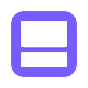
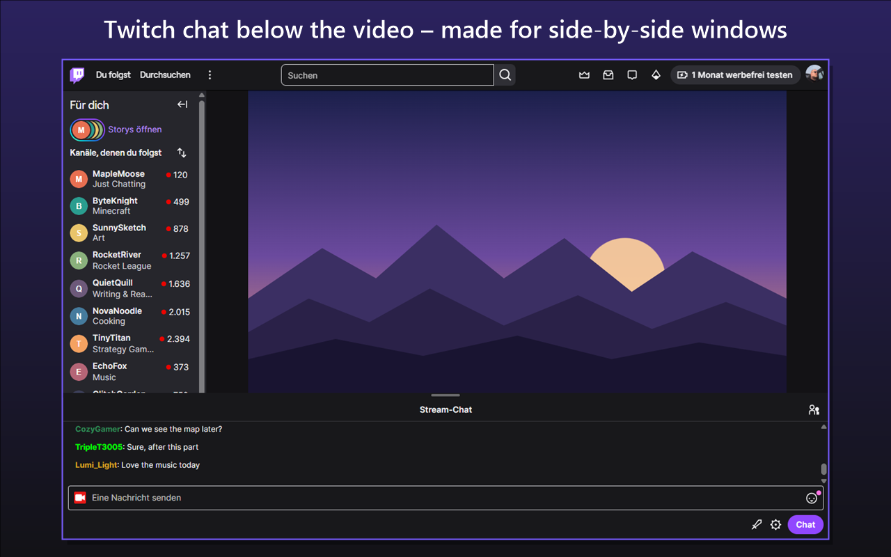
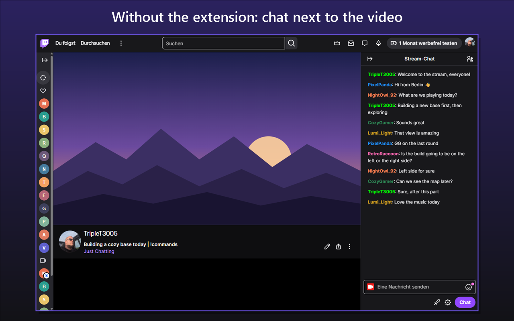
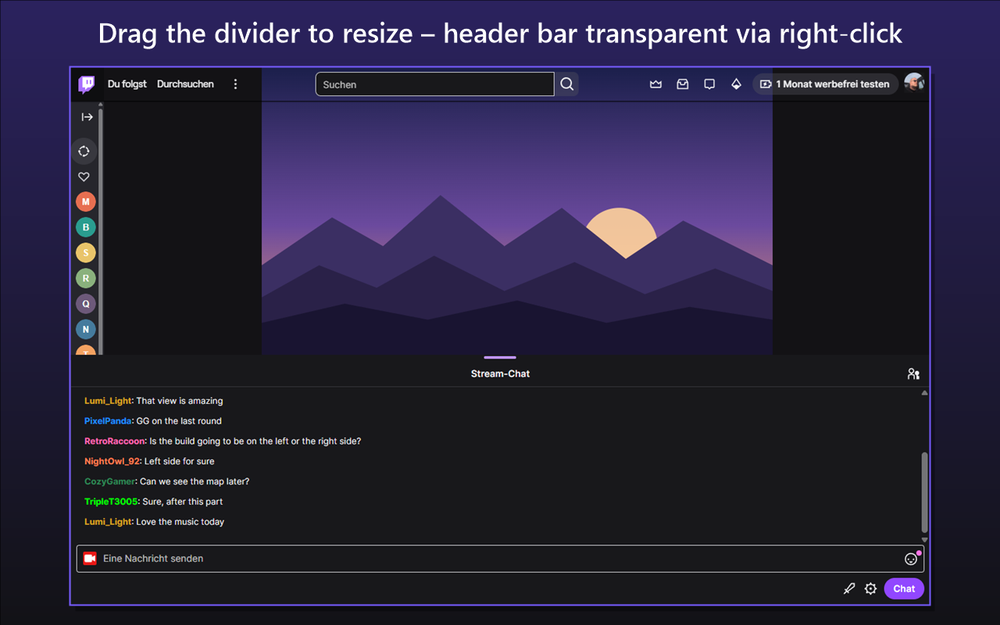
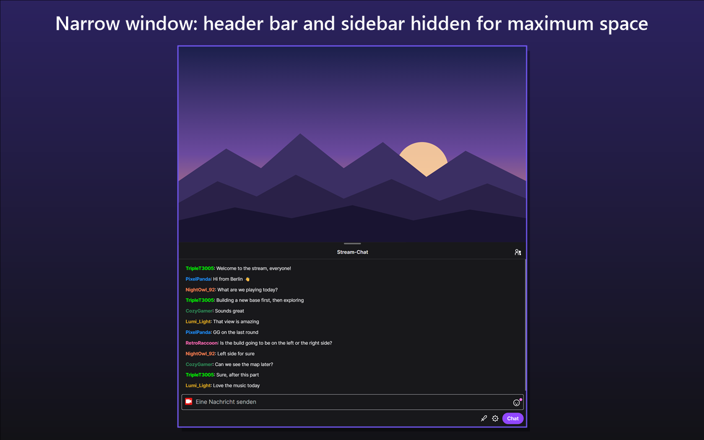
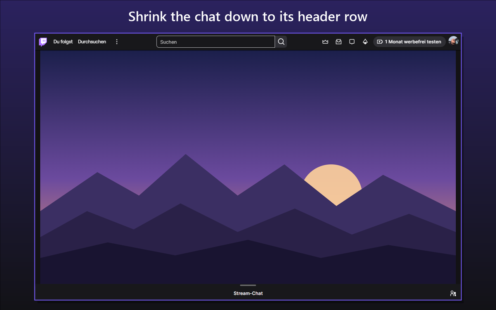

Chat Below for Twitch
English · Deutsch · Screenshots
English
Browser extension for Chrome and Edge that moves the Twitch chat below the video with one click. Made for monitors split into two or three windows side by side.
Features
- Toggle via the chat button in the video's control bar or the extension icon in the browser toolbar
- The video uses the full window width, the chat fills the space below it
- Drag the line between video and chat to change the split, down to just the chat header; double-click resets it
- A running hype train is shown compactly in the chat header row
- Right-click the extension icon to hide the header bar or make it transparent, and to hide the left sidebar
- Only active on stream pages; theatre mode and fullscreen keep working
- Available in English and German
Privacy
The extension only changes how Twitch stream pages are laid out. It does not collect, read or send any personal data, has no access to your Twitch account and makes no external requests.
Your settings (chat below on/off, divider position, header bar and sidebar options) are stored with the browser's own storage. With browser sync enabled, your browser syncs them across your devices; the extension itself does not transmit them anywhere.
Permissions: storage to remember the settings, contextMenus for the right-click menu of the icon and access to www.twitch.tv to change the page layout.
Not affiliated with or endorsed by Twitch. Twitch is a trademark of Twitch Interactive, Inc.
Deutsch
Browser-Erweiterung für Chrome und Edge, die den Twitch-Chat per Klick unter das Video verschiebt. Gedacht für Monitore, die in zwei oder drei Fenster nebeneinander aufgeteilt sind.
Funktionen
- Umschalten über den Chat-Button in der Steuerleiste des Videos oder das Erweiterungssymbol in der Browserleiste
- Das Video nutzt die volle Fensterbreite, der Chat füllt den Platz darunter
- Die Linie zwischen Video und Chat lässt sich ziehen, bis nur noch die Chat-Kopfzeile sichtbar ist; Doppelklick setzt sie zurück
- Ein laufender Hypetrain wird kompakt in der Kopfzeile des Chats angezeigt
- Per Rechtsklick auf das Erweiterungssymbol lässt sich die Kopfleiste ausblenden oder transparent schalten und die linke Seitenleiste ausblenden
- Nur auf Stream-Seiten aktiv; Kino-Modus und Vollbild funktionieren weiterhin
- Auf Deutsch und Englisch verfügbar
Datenschutz
Die Erweiterung ändert nur die Anordnung von Twitch-Stream-Seiten. Sie erhebt, liest und sendet keine personenbezogenen Daten, hat keinen Zugriff auf dein Twitch-Konto und stellt keine externen Anfragen.
Deine Einstellungen (Chat unten an/aus, Position der Trennlinie, Optionen für Kopf- und Seitenleiste) werden im Speicher des Browsers abgelegt. Ist die Browser-Synchronisierung aktiv, gleicht dein Browser sie zwischen deinen Geräten ab; die Erweiterung selbst überträgt sie nirgendwohin.
Berechtigungen: storage, um die Einstellungen zu speichern, contextMenus für das Rechtsklick-Menü des Symbols und Zugriff auf www.twitch.tv, um die Anordnung der Seite zu ändern.
Nicht mit Twitch verbunden und nicht von Twitch unterstützt. Twitch ist eine Marke von Twitch Interactive, Inc.
Screenshots




